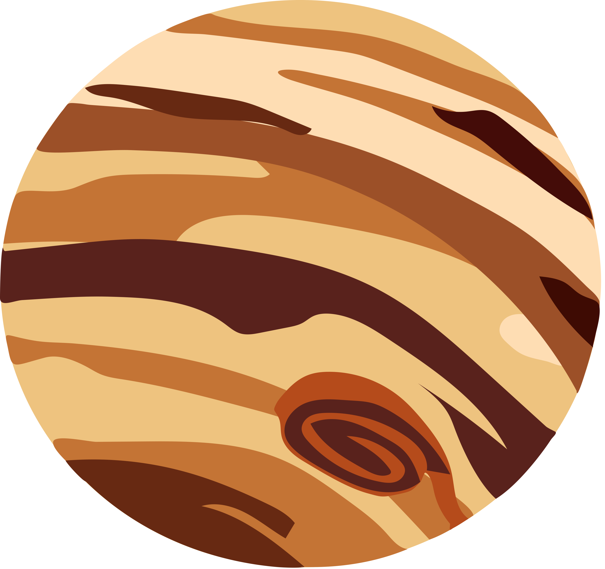

Jupiter

Intro
Fifth in line from the Sun, Jupiter is, by far, the largest planet in the solar system – more than twice as massive as all the other planets combined. Jupiter's familiar stripes and swirls are actually cold, windy clouds of ammonia and water, floating in an atmosphere of hydrogen and helium. Jupiter’s iconic Great Red Spot is a giant storm bigger than Earth that has raged for hundreds of years. One spacecraft — NASA's Juno orbiter — is currently exploring this giant world.Fun Facts
- Ingredients for life? : Jupiter cannot support life as we know it. But some of Jupiter's moons have oceans beneath their crusts that might support life.
- Super Storm: Jupiter's Great Red Spot is a gigantic storm that’s about twice the size of Earth and has raged for over a century.
- The Grandest Planet: Eleven Earths could fit across Jupiter’s equator. If Earth were the size of a grape, Jupiter would be the size of a basketball.
Next
Back